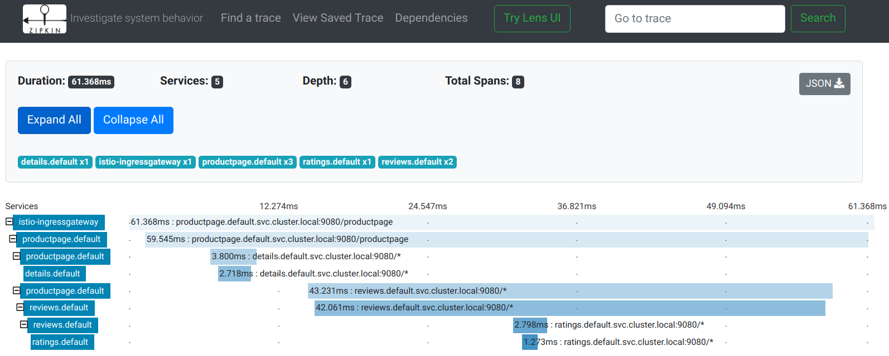

概念
Table of Contents
Istio 是什么？
云平台令使用它们的公司受益匪浅，但不可否认的是，上云会给 DevOps 团队带来压力 为了可移植性，开发人员必须使用微服务来构建应用，同时运维人员也正在管理着极端庞大的混合云和多云的部署环境
Istio 允许您 连接 、 保护 、 控制 和 观察 服务。从较高的层面来说，Istio 有助于降低这些部署的复杂性，并减轻开发团队的压力：
- 它是一个完全开源的 服务网格 ，作为 透明的一层 接入到现有的分布式应用程序里
- 它也是一个 平台 ，拥有可以集成任何 日志 、 遥测 和 策略 系统的 API 接口
Istio 多样化的特性使您能够成功且高效地运行分布式微服务架构，并提供保护、连接和监控微服务的统一方法
服务网格
服务网格 用来描述组成这些应用程序的微服务网络以及它们之间的交互。随着服务网格的规模和复杂性不断的增长，它将会变得越来越难以理解和管理。它的需求包括 服务发现 、 负载均衡 、 故障恢复 、 度量 和 监控 等。服务网格通常还有更复杂的运维需求，比如 A/B 测试 、 金丝雀发布 、 速率限制 、 访问控制 和 端到端认证
Istio 提供了对整个服务网格的行为洞察和操作控制的能力，以及一个完整的满足微服务应用各种需求的解决方案
为什么使用 Istio？
通过负载均衡、服务间的身份验证、监控等方法，Istio 可以轻松地创建一个已经部署了服务的网络，而服务的代码只需很少更改甚至无需更改。通过在整个环境中部署一个特殊的 sidecar 代理 为服务添加 Istio 的支持，而代理会 拦截 微服务之间 的所有 网络通信 ，然后使用其 控制平面 的功能来 配置 和 管理 Istio，这包括：
- 为 HTTP、gRPC、WebSocket 和 TCP 流量自动 负载均衡
- 通过丰富的 路由规则 、 重试 、 故障转移 和 故障注入 对 流量行为 进行 细粒度控制
- 可插拔的策略层和配置 API，支持 访问控制 、 速率限制 和 配额
- 集群内（包括集群的入口和出口）所有流量的 自动化度量 、 日志记录 和 追踪
- 在具有强大的基于 身份验证 和 授权 的集群中实现 安全的 服务间通信
Istio 为可扩展性而设计，可以满足不同的部署需求
核心特性
Istio 以统一的方式提供了许多跨服务网络的关键功能
流量管理
Istio 简单的 规则配置 和 流量路由 允许您控制服务之间的流量和 API 调用过程。Istio 简化了 服务级属性 （如 熔断器 、 超时 和 重试 ）的配置，并且让它轻而易举的执行重要的任务（如 A/B 测试 、 金丝雀发布 和 按流量百分比 划分的分阶段发布）
有了更好的对流量的可视性和开箱即用的故障恢复特性，您就可以在问题产生之前捕获它们，无论面对什么情况都可以使调用更可靠，网络更健壮
安全
Istio 的安全特性解放了开发人员，使其只需要专注于应用程序级别的安全。Istio 提供了 底层的安全通信通道 ，并为大规模的服务通信管理 认证 、 授权 和 加密
有了 Istio，服务通信在默认情况下就是受保护的，可以让您在跨不同协议和运行时的情况下实施一致的策略――而所有这些都只需要很少甚至不需要修改应用程序 Istio 是独立于平台的，可以与 Kubernetes（或基础设施）的网络策略一起使用。但它更强大，能够在网络和应用层面保护pod到 pod 或者服务到服务之间的通信
可观察性
Istio 健壮的 追踪 、 监控 和 日志 特性让您能够深入的了解服务网格部署
通过 Istio 的监控能力，可以真正的了解到服务的性能是如何影响上游和下游的 而它的定制 Dashboard 提供了对所有服务性能的可视化能力，并让您看到它如何影响其他进程
Istio 的 Mixer 组件 负责 策略控制 和 遥测数据收集 。它提供了后端抽象和中介，将一部分 Istio 与后端的基础设施实现细节隔离开来，并为运维人员提供了对网格与后端基础实施之间交互的细粒度控制
所有这些特性都使您能够更有效地设置、监控和加强服务的 SLO。当然，底线是您可以快速有效地检测到并修复出现的问题
平台支持
Istio 独立于平台，被设计为可以在各种环境中运行，包括跨云、内部环境、Kubernetes、Mesos 等等。可以在 Kubernetes 或是装有 Consul 的 Nomad 环境上部署 Istio。Istio 目前支持：
- Kubernetes 上的服务部署
- 基于 Consul 的服务注册
- 服务运行在独立的虚拟机上
流量管理
Istio 的 流量路由规则可以让您很容易的控制服务之间的流量和 API 调用 Istio 简化了服务级别属性的配置，比如熔断器、超时和重试，并且能轻松的设置重要的任务，如 A/B 测试、金丝雀发布、基于流量百分比切分的概率发布等 它还提供了开箱即用的故障恢复特性，有助于增强应用的健壮性，从而更好地应对被依赖的服务或网络发生故障的情况
Istio 的流量管理模型源于和 服务一起部署 的 Envoy 代理 。 网格内服务 发送 和 接收 的 所有流量 （data plane流量）都经由 Envoy 代理
这让控制网格内的流量变得异常简单，而且不需要对服务做任何的更改
介绍
为了在网格中导流，Istio 需要知道所有的 endpoint 在哪和属于哪个服务。为了定位到 service registry (服务注册中心)，Istio 会连接到一个服务发现系统
例如，如果您在 Kubernetes 集群上安装了 Istio，那么它将自动检测该集群中的服务和 endpoint
使用此服务注册中心，Envoy 代理可以将流量定向到相关服务。大多数基于微服务的应用程序，每个服务的工作负载都有多个实例来处理流量，称为 负载均衡池 。默认情况下，Envoy 代理基于 轮询调度 模型在服务的负载均衡池内分发流量，按顺序将请求发送给池中每个成员，一旦所有服务实例均接收过一次请求后，重新回到第一个池成员
Istio 基本的服务发现和负载均衡能力为您提供了一个可用的服务网格，但它能做到的远比这多的多 在许多情况下，您可能希望对网格的流量情况进行更细粒度的控制 作为 A/B 测试的一部分，您可能想将特定百分比的流量定向到新版本的服务，或者为特定的服务实例子集应用不同的负载均衡策略 您可能还想对进出网格的流量应用特殊的规则，或者将网格的外部依赖项添加到服务注册中心
通过使用 Istio 的 流量管理 API 将流量配置添加到 Istio，就可以完成所有这些甚至更多的工作
和其他 Istio 配置一样，这些 API 也使用 Kubernetes 的自定义资源定义（CRDs）来声明，可以像示例中看到的那样使用 YAML 进行配置
虚拟服务
虚拟服务 （Virtual Service） 和 目标规则 （Destination Rule） 是 Istio 流量路由功能的关键拼图。虚拟服务让您配置如何在服务网格内将请求路由到服务，这基于 Istio 和平台提供的基本的连通性和服务发现能力。每个虚拟服务包含一组 路由规则 ，Istio 按顺序评估它们，Istio 将每个给定的请求匹配到虚拟服务指定的实际目标地址
您的网格可以有多个虚拟服务，也可以没有，取决于您的使用场景
为什么使用虚拟服务？
虚拟服务在增强 Istio 流量管理的 灵活性 和 有效性 方面，发挥着至关重要的作用，通过对 客户端请求的目标地址 与 真实响应请求的目标工作负载 进行 解耦 来实现。虚拟服务同时提供了丰富的方式，为发送至这些工作负载的流量指定不同的路由规则。
为什么这如此有用？就像在介绍中所说，如果没有虚拟服务，Envoy 会在所有的服务实例中使用轮询的负载均衡策略分发请求，您可以用您对工作负载的了解来改善这种行为 例如，有些可能代表不同的版本。这在 A/B 测试中可能有用，您可能希望在其中配置基于不同服务版本的流量百分比路由，或指引从内部用户到特定实例集的流量
使用 虚拟服务 ，可以为 一个或多个主机名 指定 流量行为 。在虚拟服务中使用 路由规则 ，告诉 Envoy 如何 发送 虚拟服务的流量 到适当的 目标 。 路由目标地址 可以是 同一服务的不同版本 ，也可以是 完全不同的服务
一个典型的用例是将流量发送到被指定为服务子集的服务的不同版本 客户端将虚拟服务视为一个单一实体，将请求发送至虚拟服务主机，然后 Envoy 根据虚拟服务规则把流量路由到不同的版本。例如，“20% 的调用转到新版本”或“将这些用户的调用转到版本 2” 这允许您创建一个金丝雀发布，逐步增加发送到新版本服务的流量百分比 流量路由完全独立于实例部署，这意味着实现新版本服务的实例可以根据流量的负载来伸缩，完全不影响流量路由 相比之下，像 Kubernetes 这样的容器编排平台只支持基于实例缩放的流量分发，这会让情况变得复杂
虚拟服务可以让您：
- 通过单个虚拟服务处理多个应用程序服务。如果您的网格使用 Kubernetes，可以配置一个虚拟服务处理特定命名空间中的所有服务
映射单一的虚拟服务到多个“真实”服务特别有用，可以在不需要客户适应转换的情况下，将单体应用转换为微服务构建的复合应用系统 您的路由规则可以指定为“对这些 monolith.com 的 URI 调用转到microservice A”等等 可以在下面的一个示例看到它是如何工作的
- 和网关整合并配置流量规则来控制出入流量
在某些情况下，您还需要配置目标规则来使用这些特性，因为这是指定服务子集的地方 在一个单独的对象中指定服务子集和其它特定目标策略，有利于在虚拟服务之间更简洁地重用这些规则
虚拟服务示例
下面的虚拟服务根据请求是否来自特定的用户，把它们路由到服务的不同版本
apiVersion: networking.istio.io/v1alpha3 kind: VirtualService metadata: name: reviews spec: hosts: - reviews http: - match: - headers: end-user: exact: jason route: - destination: host: reviews subset: v2 - route: - destination: host: reviews subset: v3
hosts 字段
使用 hosts 字段列举 虚拟服务的主机 ：即 用户指定的目标 或是 路由规则设定的目标 。这是客户端向服务发送请求时使用的一个或多个地址
hosts:
- reviews
虚拟服务主机名可以是 IP 地址 、 DNS 名称 ，或者依赖于平台的一个简称（例如 Kubernetes 服务的短名称 ），隐式或显式地指向一个 完全限定域名 （FQDN）。您也可以使用 通配符 （“*”）前缀，让您创建一组匹配所有服务的路由规则
虚拟服务的 hosts 字段实际上不必是 Istio 服务注册的一部分，它只是虚拟的目标地址，这让您可以为没有路由到网格内部的虚拟主机建模
路由规则
在 http 字段包含了虚拟服务的 路由规则 ，用来描述 匹配条件 和 路由行为 ，它们把 HTTP/1.1、HTTP2 和 gRPC 等流量发送到 hosts 字段指定的目标 （您也可以用 tcp 和 tls 片段为 TCP 和未终止的 TLS 流量设置路由规则）。一个路由规则包含了指定的请求要流向哪个 目标地址 ，具有 0 或多个匹配条件 ，取决于您的使用场景
- 匹配条件
示例中的第一个路由规则有一个条件，因此以 match 字段开始
- match: - headers: end-user: exact: jason
在本例中，您希望此路由应用于来自 ”jason“ 用户的所有请求，所以使用 headers、end-user 和 exact 字段选择适当的请求
- Destination
route 部分的 destination 字段指定了符合此条件的流量的 实际目标地址 。与虚拟服务的 hosts 不同，destination 的 host 必须是 存在于 Istio 服务注册中心 的实际目标地址，否则 Envoy 不知道该将请求发送到哪里。可以是一个 有代理的服务网格 ，或者是一个通过 服务入口 被添加进来的 非网格服务
route: - destination: host: reviews subset: v2
本示例运行在 Kubernetes 环境中，host 名为一个 Kubernetes 服务名 请注意，在该示例和本页其它示例中，为了简单，我们使用 Kubernetes 的短名称设置 destination 的 host 在评估此规则时，Istio 会添加一个基于虚拟服务命名空间的域后缀，这个虚拟服务包含要获取主机的完全限定名的路由规则 在我们的示例中使用短名称也意味着您可以复制并在任何喜欢的命名空间中尝试它们
destination 片段还指定了 Kubernetes 服务的子集 ，将符合此规则条件的请求转入其中
在本例中子集名称是 v2，可以在目标规则章节中看到如何定义服务子集
路由规则优先级
路由规则按从上到下的顺序选择，虚拟服务中定义的第一条规则有最高优先级
本示例中，不满足第一个路由规则的流量均流向一个默认的目标 该目标在第二条规则中指定。因此，第二条规则没有 match 条件，直接将流量导向 v3 子集
我们建议提供一个默认的“无条件”或基于权重的规则（见下文）作为每一个虚拟服务的最后一条规则，如案例所示，从而确保流经虚拟服务的流量至少能够匹配一条路由规则
路由规则的更多内容
正如上面所看到的，路由规则是将特定流量子集路由到指定目标地址的强大工具。您可以在流量端口、header 字段、URI 等内容上设置匹配条件
例如，这个虚拟服务让用户发送请求到两个独立的服务：ratings 和 reviews，就好像它们是 http://bookinfo.com/ 这个更大的虚拟服务的一部分 虚拟服务规则根据请求的 URI 和指向适当服务的请求匹配流量
apiVersion: networking.istio.io/v1alpha3 kind: VirtualService metadata: name: bookinfo spec: hosts: - bookinfo.com http: - match: - uri: prefix: /reviews route: - destination: host: reviews - match: - uri: prefix: /ratings route: - destination: host: ratings ... http: - match: sourceLabels: app: reviews route: ...
有些匹配条件可以使用精确的值，如前缀或正则。可以使用 AND 向同一个 match 块添加多个匹配条件，或者使用 OR 向同一个规则添加多个 match 块。对于任何给定的虚拟服务也可以有多个路由规则
这可以在单个虚拟服务中使路由条件变得随您所愿的复杂或简单 匹配条件字段和备选值的完整列表可以在 HTTPMatchRequest 参考中找到
另外，使用匹配条件您可以按百分比 权重 分发请求。这在 A/B 测试和金丝雀发布中非常有用：
spec: hosts: - reviews http: - route: - destination: host: reviews subset: v1 weight: 75 - destination: host: reviews subset: v2 weight: 25
也可以使用路由规则在流量上执行一些操作，例如：
- 添加或删除 header
- 重写 URL
- 为调用这一目标地址的请求设置重试策略。
想了解如何利用这些操作，查看 HTTPRoute 参考
目标规则
与虚拟服务一样， 目标规则 也是 Istio 流量路由功能的关键部分，可以将虚拟服务视为将流量如何路由到给定目标地址，然后使用目标规则来 配置该目标的流量 。在评估虚拟服务路由规则之后，目标规则将应用于流量的“真实”目标地址
- 可以使用目标规则来 指定命名的服务子集
例如按版本为所有给定服务的实例分组，然后可以在虚拟服务的路由规则中使用这些服务子集来控制到服务不同实例的流量
- 还允许在调用整个目的地服务或特定服务子集时 定制 Envoy 的流量策略
比如您喜欢的负载均衡模型、TLS 安全模式或熔断器设置
负载均衡选项
默认情况下，Istio 使用 轮询的负载均衡 策略，实例池中的每个实例依次获取请求。Istio 同时支持如下的负载均衡模型，可以在 DestinationRule 中为流向某个特定服务或服务子集的流量指定这些模型：
- 随机 ：请求以随机的方式转到池中的实例
- 权重 ：请求根据指定的百分比转到实例
- 最少请求 ：请求被转到最少被访问的实例
目标规则示例
在下面的示例中，目标规则为 my-svc 目标服务配置了 3 个具有不同负载均衡策略的子集：
apiVersion: networking.istio.io/v1alpha3 kind: DestinationRule metadata: name: my-destination-rule spec: host: my-svc trafficPolicy: loadBalancer: simple: RANDOM subsets: - name: v1 labels: version: v1 - name: v2 labels: version: v2 trafficPolicy: loadBalancer: simple: ROUND_ROBIN - name: v3 labels: version: v3
每个子集都是基于一个或多个 labels 定义的
在 Kubernetes 中它是附加到像 Pod 这种对象上的键/值对 这些标签应用于 Kubernetes 服务的 Deployment 并作为 metadata 来识别不同的版本
除了定义子集之外，目标规则对于所有子集都有默认的流量策略，而对于该子集，则有特定于子集的策略覆盖它
定义在 subsets 上的默认策略，为 v1 和 v3 子集设置了一个简单的随机负载均衡器 在 v2 策略中，轮询负载均衡器被指定在相应的子集字段上
网关
使用网关为网格来管理入站和出站流量，可以让您指定要进入或离开网格的流量：
- 网关配置被用于运行在 网格边界 的 独立 Envoy 代理
- 不是服务工作负载的 sidecar 代理
与 Kubernetes Ingress API 这种控制进入系统流量的其他机制不同，Istio 网关充分利用流量路由的强大能力和灵活性 可以这么做的原因是 Istio 的网关资源可以配置 4-6 层的负载均衡属性，如对外暴露的端口、TLS 设置等 作为替代应用层流量路由（L7）到相同的 API 资源，绑定了一个常规的 Istio 虚拟服务到网关，这可以像管理网格中其他数据平面的流量一样去管理网关流量
网关主要用于管理进入的流量，但也可以配置出口网关。出口网关让您为 离开网格的流量 配置 一个 专用的出口节点 ：
- 可以限制哪些服务可以或应该访问外部网络
- 启用出口流量安全控制为您的网格添加安全性
- 可以使用网关配置一个纯粹的内部代理
Istio 提供了一些预先配置好的网关代理部署（istio-ingressgateway 和 istio-egressgateway）供使用 如果使用演示安装它们都已经部署好了；如果使用默认或 sds 配置文件则只部署了入口网关 可以将您自己的网关配置应用到这些部署或配置您自己的网关代理
Gateway 示例
下面的示例展示了一个外部 HTTPS 入口流量的网关配置：
apiVersion: networking.istio.io/v1alpha3 kind: Gateway metadata: name: ext-host-gwy spec: selector: app: my-gateway-controller servers: - port: number: 443 name: https protocol: HTTPS hosts: - ext-host.example.com tls: mode: SIMPLE serverCertificate: /tmp/tls.crt privateKey: /tmp/tls.key
这个网关配置让 HTTPS 流量从 ext-host.example.com 通过 443 端口流入网格，但没有为请求指定任何路由规则
为想要工作的网关指定路由，您必须把网关绑定到虚拟服务上。正如下面的示例所示，使用虚拟服务的 gateways 字段进行设置：
apiVersion: networking.istio.io/v1alpha3 kind: VirtualService metadata: name: virtual-svc spec: hosts: - ext-host.example.com gateways: - ext-host-gwy
然后就可以为出口流量配置带有路由规则的虚拟服务
服务入口
使用 服务入口 （Service Entry） 来添加一个 入口 到 Istio 内部维护的 服务注册中心 。添加了服务入口后，Envoy 代理可以向服务发送流量，就好像它是网格内部的服务一样。配置服务入口允许管理运行在 网格外的服务的流量 ，它包括以下几种能力：
- 为外部目标 redirect 和转发请求，例如来自 web 端的 API 调用，或者流向遗留老系统的服务
- 为外部目标定义重试、超时和故障注入策略
- 添加一个运行在虚拟机的服务来扩展您的网格
- 从逻辑上添加来自不同集群的服务到网格，在 Kubernetes 上实现一个多集群 Istio 网格
不需要为网格服务要使用的每个外部服务都添加服务入口，默认情况下，Istio 配置 Envoy 代理将请求传递给未知服务 但是，您不能使用 Istio 的特性来控制没有在网格中注册的目标流量
服务入口实例
下面示例的 mesh-external 服务入口将 ext-resource 外部依赖项添加到 Istio 的服务注册中心：
apiVersion: networking.istio.io/v1alpha3 kind: ServiceEntry metadata: name: svc-entry spec: hosts: - ext-svc.example.com ports: - number: 443 name: https protocol: HTTPS location: MESH_EXTERNAL resolution: DNS
您指定的外部资源使用 hosts 字段，可以使用完全限定名或通配符作为前缀域名
可以配置虚拟服务和目标规则，以更细粒度的方式控制到服务入口的流量，这与网格中的任何其他服务配置流量的方式相同
apiVersion: networking.istio.io/v1alpha3 kind: DestinationRule metadata: name: ext-res-dr spec: host: ext-svc.example.com trafficPolicy: tls: mode: MUTUAL clientCertificate: /etc/certs/myclientcert.pem privateKey: /etc/certs/client_private_key.pem caCertificates: /etc/certs/rootcacerts.pem
例如，目标规则配置流量路由以使用双向 TLS 来保护到 ext-svc.example.com 外部服务的连接，使用服务入口配置了该外部服务
Sidecar
默认情况下，Istio 让每个 Envoy 代理都可以访问来自和它关联的工作负载的所有端口的请求，然后转发到对应的工作负载。可以使用 sidecar 配置去做下面的事情：
- 微调 Envoy 代理 接受的 端口 和 协议集
- 限制 Envoy 代理 可以访问 的 服务集合
可能希望在较庞大的应用程序中限制这样的 sidecar 可达性，配置每个代理能访问网格中的任意服务可能会因为高内存使用量而影响网格的性能
可以指定将 sidecar 配置应用于特定命名空间中的所有工作负载，或者使用 workloadSelector 选择特定的工作负载
apiVersion: networking.istio.io/v1alpha3 kind: Sidecar metadata: name: default namespace: bookinfo spec: egress: - hosts: - "./*" - "istio-system/*"
sidecar 配置将 bookinfo 命名空间中的所有服务配置为仅能访问运行在相同命名空间和 Istio 控制平面中的服务（目前需要使用 Istio 的策略和遥测功能）
网络弹性和测试
除了网格导流之外，Istio 还提供了可选的 故障恢复 和 故障注入 功能
可以在运行时动态配置这些功能 使用这些特性可以让应用程序运行稳定，确保服务网格能够容忍故障节点，并防止局部故障级联影响到其他节点
超时
超时是 Envoy 代理等待来自给定服务的答复的时间量，以确保服务不会因为等待答复而无限期的挂起，并在可预测的时间范围内调用成功或失败。HTTP 请求的默认超时时间是 15 秒 ，这意味着如果服务在 15 秒内没有响应，调用将失败。对于某些应用程序和服务，Istio 的缺省超时可能不合适：
- 超时太长可能会由于等待失败服务的回复而导致过度的延迟
- 而超时过短则可能在等待涉及多个服务返回的操作时触发不必要地失败
为了找到并使用最佳超时设置，Istio 允许您使用虚拟服务按服务轻松地动态调整超时，而不必修改您的业务代码：
apiVersion: networking.istio.io/v1alpha3 kind: VirtualService metadata: name: ratings spec: hosts: - ratings http: - route: - destination: host: ratings subset: v1 timeout: 10s
示例是一个虚拟服务，它对 ratings 服务的 v1 子集的调用指定 10 秒超时
重试
重试设置指定如果初始调用失败，Envoy 代理尝试连接服务的最大次数。通过确保调用不会因为临时过载的服务或网络等问题而永久失败，重试可以 提高 服务 可用性 和应用程序的性能。重试之间的间隔（ 25ms+ ）是可变的，并由 Istio 自动确定，从而防止被调用服务被请求淹没。HTTP 请求的默认重试行为是在返回错误之前重试 两次 。与超时一样，Istio 默认的重试行为在延迟方面可能不适合您的应用程序需求（对失败的服务进行过多的重试会降低速度）或可用性。可以在虚拟服务中按服务调整重试设置，而不必修改业务代码。还可以通过添加每次重试的超时来进一步细化重试行为，并指定每次重试都试图成功连接到服务所等待的时间量
apiVersion: networking.istio.io/v1alpha3 kind: VirtualService metadata: name: ratings spec: hosts: - ratings http: - route: - destination: host: ratings subset: v1 retries: attempts: 3 perTryTimeout: 2s
示例配置了在初始调用失败后最多重试 3 次来连接到服务子集，每个重试都有 2 秒的超时
熔断器
熔断器是 Istio 为创建具有弹性的微服务应用提供的另一个有用的机制。在熔断器中，设置一个对服务中的单个主机调用的限制，例如 并发连接的数量 或对该主机 调用失败的次数 。一旦限制被触发，熔断器就会“跳闸”并停止连接到该主机。使用熔断模式可以快速失败而不必让客户端尝试连接到过载或有故障的主机。 熔断适用于在负载均衡池中的 真实 网格目标地址 ，您可以在 目标规则 中配置熔断器阈值，让配置适用于服务中的每个主机
apiVersion: networking.istio.io/v1alpha3 kind: DestinationRule metadata: name: reviews spec: host: reviews subsets: - name: v1 labels: version: v1 trafficPolicy: connectionPool: tcp: maxConnections: 100
示例将 v1 子集的reviews服务工作负载的并发连接数限制为 100
故障注入
在配置了网络，包括故障恢复策略之后，可以使用 Istio 的故障注入机制来为整个应用程序测试故障恢复能力
故障注入是一种将错误引入系统以确保系统能够承受并从错误条件中恢复的测试方法 使用故障注入特别有用，能确保故障恢复策略不至于不兼容或者太严格，这会导致关键服务不可用
与其他错误注入机制（如延迟数据包或在网络层杀掉 Pod）不同，Istio 允许在应用层注入错误
这可以注入更多相关的故障，例如 HTTP 错误码，以获得更多相关的结果
可以注入两种故障，它们都使用 虚拟服务 配置：
- 延迟 ：延迟是时间故障。它们模拟增加的网络延迟或一个超载的上游服务
- 终止 ：终止是崩溃失败。他们模仿上游服务的失败。终止通常以 HTTP 错误码或 TCP 连接失败的形式出现
apiVersion: networking.istio.io/v1alpha3 kind: VirtualService metadata: name: ratings spec: hosts: - ratings http: - fault: delay: percentage: value: 0.1 fixedDelay: 5s route: - destination: host: ratings subset: v1
虚拟服务为千分之一的访问 ratings 服务的请求配置了一个 5 秒的延迟
和您的应用程序一起运行
Istio 故障恢复功能对应用程序来说是完全透明的。在返回响应之前，应用程序不知道 Envoy sidecar 代理是否正在处理被调用服务的故障
这意味着，如果在应用程序代码中设置了故障恢复策略，那么需要记住这两个策略都是独立工作的，否则会发生冲突 例如，假设设置了两个超时，一个在虚拟服务中配置，另一个在应用程序中配置 应用程序为服务的 API 调用设置了 2 秒超时。而在虚拟服务中配置了一个 3 秒超时和重试 在这种情况下，应用程序的超时会先生效，因此 Envoy 的超时和重试尝试会失效
虽然 Istio 故障恢复特性提高了网格中服务的可靠性和可用性，但 应用程序 必须 处理故障 或 错误 并采取适当的 回退操作
例如，当负载均衡中的所有实例都失败时，Envoy 返回一个HTTP 503代码。应用程序必须实现回退逻辑来处理HTTP 503错误代码
扩展性
WebAssembly 是一种沙盒技术，可以用于扩展 Istio 代理（Envoy）的能力
Proxy-Wasm 沙盒 API 取代了 Mixer 作为 Istio 主要的扩展机制，在 Istio 1.6 中将会为 Proxy-Wasm 插件提供一种统一的配置 API
WebAssembly 沙盒的目标：
- 效率 - 这是一种低延迟，低 CPU 和内存开销的扩展机制
- 功能 - 这是一种可以执行策略，收集遥测数据和执行有效荷载变更的扩展机制
- 隔离 - 一个插件中程序的错误或是崩溃不会影响其它插件
- 配置 - 插件使用与其它 Istio API 一致的 API 进行配置。可以动态的配置扩展
- 运维 - 扩展可以以仅日志，故障打开或者故障关闭的方式进行访问和部署
- 扩展开发者 - 可以用多种编程语言编写
安全
将单一应用程序分解为微服务可提供各种好处，包括更好的灵活性、可伸缩性以及服务复用的能力。但是，微服务也有特殊的安全需求：
- 为了抵御中间人攻击，需要流量加密
- 为了提供灵活的服务访问控制，需要双向 TLS 和细粒度的访问策略
- 要确定谁在什么时候做了什么，需要审计工具
Istio Security 尝试提供全面的安全解决方案来解决所有这些问题 接下来概述了如何使用 Istio 的安全功能来保护您的服务，无论您在何处运行它们。特别是 Istio 安全性可以缓解针对您的数据、端点、通信和平台的内部和外部威胁
Istio 安全功能提供强大的身份，强大的策略，透明的 TLS 加密，认证，授权和审计（AAA）工具来保护你的服务和数据。Istio 安全的目标是：
- 默认安全：应用程序代码和基础设施无需更改
- 深度防御：与现有安全系统集成以提供多层防御
- 零信任网络：在不受信任的网络上构建安全解决方案
高级架构
Istio 中的安全性涉及多个组件：
- 用于密钥和证书管理的证书颁发机构（CA）
- 配置 API 服务器分发给代理：
- 认证策略
- 授权策略
- 安全命名信息
- Sidecar 和 边缘代理 作为 Policy Enforcement Points (PEPs) 以保护客户端和服务器之间的通信安全
- 一组 Envoy 代理 扩展，用于管理 遥测 和 审计
控制面处理来自 API server 的配置，并且在数据面中配置 PEPs。PEPs 用 Envoy 实现。下图显示了架构：
Istio 身份
身份是任何安全基础架构的基本概念 在工作负载间通信开始时，双方必须交换包含身份信息的凭证以进行双向验证 在客户端，根据安全命名信息检查服务器的标识，以查看它是否是该服务的授权运行程序 在服务器端，服务器可以根据授权策略确定客户端可以访问哪些信息，审计谁在什么时间访问了什么，根据他们使用的工作负载向客户收费，并拒绝任何未能支付账单的客户访问工作负载
Istio 身份模型使用 service identity （服务身份）来确定一个请求源端的身份。这种模型有极好的灵活性和粒度，可以用服务身份来标识人类用户、单个工作负载或一组工作负载。在没有服务身份的平台上，Istio 可以使用其它可以对服务实例进行分组的身份，例如 服务名称 。下面的列表展示了在不同平台上可以使用的服务身份：
- Kubernetes: Kubernetes service account
- GKE/GCE: GCP service account
- GCP: GCP service account
- AWS: AWS IAM user/role account
- 本地（非 Kubernetes）：用户帐户、自定义服务帐户、服务名称、Istio 服务帐户或 GCP 服务帐户
自定义服务帐户引用现有服务帐户，就像客户的身份目录管理的身份一样
公钥基础设施 (PKI)
Istio PKI 使用 X.509 证书 为每个 工作负载 都提供强大的 身份标识 。可以大规模进行自动化密钥和证书轮换，伴随每个 Envoy 代理 都运行着一个 istio-agent 负责 证书和密钥 的供应。下图显示了这个机制的运行流程：
Istio 供应身份是通过 secret discovery service （SDS）来实现的，具体流程如下：
- CA 提供 gRPC 服务 以接受 证书签名 请求（CSRs）
- Envoy 通过 Envoy 秘密发现服务 （SDS）API 发送证书和 密钥 请求
- 在收到 SDS 请求后，istio-agent 创建 私钥和 CSR ，然后将 CSR 及其凭据 发送到 Istio CA 进行 签名
- CA 验证 CSR 中携带的 凭据 并 签署 CSR 以生成 证书
- Istio-agent 通过 Envoy SDS API 将 私钥 和从 Istio CA 收到的证书发送给 Envoy
上述 CSR 过程会周期性地重复，以处理证书和密钥轮换
认证
Istio 提供两种类型的认证：
- Peer authentication：用于服务到服务的认证，以验证进行连接的客户端。Istio 提供 双向 TLS 作为传输认证的全栈解决方案，无需更改服务代码就可以启用它。这个解决方案：
- 为每个服务提供强大的身份，表示其角色，以实现跨群集和云的互操作性
- 保护服务到服务的通信
- 提供密钥管理系统，以自动进行密钥和证书的生成，分发和轮换
- Request authentication：用于最终用户认证，以验证附加到请求的凭据。 Istio 使用 JSON Web Token（JWT）验证启用请求级认证，并使用自定义认证实现或任何 OpenID Connect 的认证实现（例如下面列举的）来简化的开发人员体验
- ORY Hydra
- Keycloak
- Auth0
- Firebase Auth
- Google Auth
在所有情况下，Istio 都通过 自定义 Kubernetes API 将 认证策略 存储 在 Istio config store 。Istiod 使 每个代理 保持最新状态，并在适当时提供密钥
此外，Istio 的认证机制支持宽容模式（permissive mode），以帮助您了解策略更改在实施之前如何影响您的安全状况
双向 TLS 认证
Istio 通过 客户端 和 服务器端 PEPs 建立服务到服务的通信通道，PEPs 被实现为Envoy 代理。当一个工作负载使用双向 TLS 认证向另一个工作负载发送请求时，该请求的处理方式如下：
- Istio 将 出站流量 从客户端重新 路由 到 客户端的本地 sidecar Envoy
- 客户端 Envoy 与 服务器端 Envoy 开始 双向 TLS 握手 。在握手期间，客户端 Envoy 还做了 安全命名检查 ，以验证 服务器证书 中显示的 服务帐户 是否被 授权 运行 目标服务
- 客户端 Envoy 和服务器端 Envoy 建立 了一个 双向的 TLS 连接 ，Istio 将流量从 客户端 Envoy 转发 到 服务器端 Envoy
- 授权后， 服务器端 Envoy 通过 本地 TCP 连接 将流量 转发 到 服务器服务
宽容模式
Istio 双向 TLS 具有一个 宽容模式 （permissive mode），允许服务同时接受 纯文本 流量和 双向 TLS 流量。这个功能极大的提升了双向 TLS 的入门体验。
在运维人员希望将服务移植到启用了双向 TLS 的 Istio 上时，许多非 Istio 客户端和非 Istio 服务端通信时会产生问题 通常情况下，运维人员无法同时为所有客户端安装 Istio sidecar，甚至没有这样做的权限 即使在服务端上安装了 Istio sidecar，运维人员也无法在不中断现有连接的情况下启用双向 TLS
启用宽容模式后，服务可以同时接受纯文本和双向 TLS 流量。这个模式为入门提供了极大的灵活性。服务中安装的 Istio sidecar 立即接受双向 TLS 流量而不会打断现有的纯文本流量。因此，运维人员可以逐步安装和配置客户端 Istio sidecar 发送双向 TLS 流量。一旦客户端配置完成，运维人员便可以将服务端配置为仅 TLS 模式
安全命名
服务器身份（Server identities）被编码在证书里，但服务名称（service names）通过服务发现或 DNS 被检索。 安全命名信息 将 服务器身份 映射 到 服务名称 。身份 A 到服务名称 B 的映射表示“授权 A 运行服务 B“。 控制平面 监视 apiserver，生成安全命名映射，并将其安全地分发到 PEPs
以下示例说明了为什么安全命名对身份验证至关重要 假设运行服务 datastore 的合法服务器仅使用 infra-team 身份，恶意用户拥有 test-team 身份的证书和密钥 恶意用户打算模拟服务以检查从客户端发送的数据。恶意用户使用证书和 test-team 身份的密钥部署伪造服务器。假设恶意用户成功攻击了发现服务或 DNS，以将 datastore 服务名称映射到伪造服务器 当客户端调用 datastore 服务时，它从服务器的证书中提取 test-team 身份，并用安全命名信息检查 test-team 是否被允许运行 datastore。客户端检测到 test-team 不允许运行 datastore 服务，认证失败
安全命名能够防止 HTTPS 流量 受到 一般性网络劫持 ，除了 DNS 欺骗外，它还可以保护 TCP 流量 免受一般网络劫持
如果攻击者劫持了 DNS 并修改了目的地的 IP 地址，它将无法用于 TCP 通信 这是因为 TCP 流量不包含主机名信息，只能依靠 IP 地址进行路由，而且甚至在客户端 Envoy 收到流量之前，也可能发生 DNS 劫持
认证架构
可以使用 peer 和 request 认证策略为在 Istio 网格中接收请求的工作负载指定认证要求：
- 网格运维人员使用 .yaml 文件来指定策略
- 部署后，策略将保存在 Istio 配置存储中
- Istio 控制器监视配置存储
一有任何的策略变更，新策略都会转换为适当的配置，告知 PEP 如何执行所需的认证机制：
- 控制平面可以获取公共密钥，并将其附加到配置中以进行 JWT 验证
- 或者，Istiod 提供了 Istio 系统管理的密钥和证书的路径，并将它们安装到应用程序 pod 用于双向 TLS
Istio 异步发送配置到目标端点。代理收到配置后，新的认证要求会立即生效。发送请求的客户端服务负责遵循必要的认证机制：
- 对于 peer authentication，应用程序负责获取 JWT 凭证并将其附加到请求
- 对于双向 TLS，Istio 会自动将两个 PEPs 之间的所有流量升级为双向 TLS
如果认证策略禁用了双向 TLS 模式，则 Istio 将继续在 PEPs 之间使用纯文本 要覆盖此行为，请使用 destination rules显式禁用双向 TLS 模式
Istio 将两种类型的身份验证以及凭证中的其他声明（如果适用）输出到下一层：授权
认证策略
正如认证架构中所说的，认证策略是对服务收到的请求生效的。要在 双向 TLS 中指定 客户端认证策略 ，需要在 DetinationRule 中设置 TLSSettings
TLS 设置参考文档中有更多这方面的信息
和其他的 Istio 配置一样，可以用 .yaml 文件 的形式来编写认证策略。部署策略使用 kubectl ：
apiVersion: "security.istio.io/v1beta1" kind: "PeerAuthentication" metadata: name: "example-peer-policy" namespace: "foo" spec: selector: matchLabels: app: reviews mtls: mode: STRICT
与带有 app:reviews 标签的工作负载的传输层认证，必须使用双向 TLS
策略存储
Istio 将：
- 网格范围 的策略存储在 根命名空间 。这些策略使用一个 空的 selector 适用于 网格中的所有 工作负载
- 具有 名称空间范围 的策略存储在 相应的名称空间 中。它们仅适用于其 命名空间内 的工作负载
- 如果配置了 selector 字段 ，则认证策略仅适用于与 配置的条件匹配 的工作负载
Peer 和 request 认证策略用 kind 字段区分，分别是 PeerAuthentication 和 RequestAuthentication
Selector 字段
Peer 和 request 认证策略使用 selector 字段来指定该策略适用的工作负载的标签：
selector: matchLabels: app: product-page
适用于带有 app：product-page 标签的工作负载的策略的 selector 字段
如果没有为 selector 字段提供值，则 Istio 会将策略与策略存储范围内的所有工作负载进行匹配。因此，selector 字段可帮助指定策略的范围：
- 网格范围策略：为根名称空间指定的策略，不带或带有空的 selector 字段
- 命名空间范围的策略：为非root命名空间指定的策略，不带有或带有空的 selector 字段
- 特定于工作负载的策略：在常规名称空间中定义的策略，带有非空 selector 字段
Peer 和 request 认证策略对 selector 字段遵循相同的层次结构原则，但是 Istio 以略有不同的方式组合和应用它们 ，只能有一个网格范围的 Peer 认证策略，每个命名空间也只能有一个命名空间范围的 Peer 认证策略
当您为同一网格或命名空间配置多个网格范围或命名空间范围的 Peer 认证策略时，Istio 会忽略较新的策略。当多个特定于工作负载的 Peer 认证策略匹配时，Istio 将选择最旧的策略
Istio 按照以下顺序为每个工作负载应用最窄的匹配策略：
- 特定于工作负载的
- 命名空间范围
- 网格范围
Istio 可以将所有匹配的 request 认证策略组合起来，就像它们来自单个 request 认证策略一样。因此，您可以在网格或名称空间中配置多个网格范围或命名空间范围的策略
但是，避免使用多个网格范围或命名空间范围的 request 认证策略仍然是一个好的实践
Peer authentication
Peer 认证策略指定 Istio 对目标工作负载实施的双向 TLS 模式。支持以下模式：
- PERMISSIVE：工作负载接受双向 TLS 和纯文本流量。此模式在迁移因为没有 sidecar 而无法使用双向 TLS 的工作负载的过程中非常有用。一旦工作负载完成 sidecar 注入的迁移，应将模式切换为 STRICT
- STRICT： 工作负载仅接收双向 TLS 流量
- DISABLE：禁用双向 TLS。 从安全角度来看，除非您提供自己的安全解决方案，否则请勿使用此模式
如果未设置模式，将继承父作用域的模式 未设置模式的网格范围的 peer 认证策略默认使用 PERMISSIVE 模式
下面的 peer 认证策略要求命名空间 foo 中的所有工作负载都使用双向 TLS：
apiVersion: "security.istio.io/v1beta1" kind: "PeerAuthentication" metadata: name: "example-policy" namespace: "foo" spec: mtls: mode: STRICT
对于特定于工作负载的 peer 认证策略，可以为 不同的端口 指定不同的双向 TLS 模式。您只能将工作负载声明过的端口用于端口范围的双向 TLS 配置。以下示例为 app:example-app 工作负载禁用了端口80上的双向TLS，并对所有其他端口使用名称空间范围的 peer 认证策略的双向 TLS 设置：
apiVersion: "security.istio.io/v1beta1" kind: "PeerAuthentication" metadata: name: "example-workload-policy" namespace: "foo" spec: selector: matchLabels: app: example-app portLevelMtls: 80: mode: DISABLE
上面的 peer 认证策略仅在有如下 Service 定义时工作，将流向 example-service 服务的请求绑定到 example-app 工作负载的 80 端口
apiVersion: v1 kind: Service metadata: name: example-service namespace: foo spec: ports: - name: http port: 8000 protocol: TCP targetPort: 80 selector: app: example-app
Request authentication
Request 认证策略指定验证 JSON Web Token（JWT）所需的值。 这些值包括：
- token 在请求中的位置
- 请求的 issuer
- 公共 JSON Web Key Set（JWKS）
Istio 会根据 request 认证策略中的规则检查提供的令牌（如果已提供），并拒绝令牌无效的请求。当请求不带有令牌时，默认情况下将接受它们。要拒绝没有令牌的请求，请提供授权规则，该规则指定对特定操作（例如，路径或操作）的限制
如果 Request 认证策略使用唯一的位置，则它们可以指定多个JWT 当多个策略与工作负载匹配时，Istio 会将所有规则组合起来，就好像它们被指定为单个策略一样，此行为对于开发接受来自不同 JWT 提供者的工作负载时很有用 但是，不支持具有多个有效 JWT 的请求，因为此类请求的输出主体未定义
Principals
- 使用 peer 认证策略和双向 TLS 时，Istio 将身份从 peer 认证提取到 source.principal 中
- 使用 request 认证策略时，Istio 会将 JWT 中的身份赋值给 request.auth.principal
使用这些 principals 设置 授权策略 和作为 遥测的输出
更新认证策略
可以随时更改认证策略，Istio 几乎实时将新策略推送到工作负载。但是，Istio 无法保证所有工作负载都同时收到新政策。以下建议有助于避免在更新认证策略时造成干扰：
- 将 peer 认证策略的模式从 DISABLE 更改为 STRICT 时，请使用 PERMISSIVE 模式来过渡，反之亦然。当所有工作负载成功切换到所需模式时，您可以将策略应用于最终模式。您可以使用 Istio 遥测技术来验证工作负载已成功切换
- 将 request 认证策略从一个 JWT 迁移到另一个 JWT 时，将新 JWT 的规则添加到该策略中，而不删除旧规则。这样，工作负载接受两种类型的 JWT，当所有流量都切换到新的 JWT 时，您可以删除旧规则。但是，每个 JWT 必须使用不同的位置
授权
Istio 的授权功能为网格中的工作负载提供 网格 、 命名空间 和 工作负载 级别的访问控制。这种控制层级提供了以下优点：
- 工作负载间和最终用户到工作负载的授权
- 一个简单的 API：它包括一个单独的并且很容易使用和维护的 AuthorizationPolicy CRD
- 灵活的语义：运维人员可以在 Istio 属性上定义自定义条件，并使用 DENY 和 ALLOW 动作
- 高性能：Istio 授权是在 Envoy 本地强制执行的
- 高兼容性：原生支持 HTTP、HTTPS 和 HTTP2，以及任意普通 TCP 协议
授权架构
每个 Envoy 代理 都运行一个 授权引擎 ，该引擎在运行时授权请求。当请求到达代理时，授权引擎根据当前 授权策略 评估 请求上下文 ，并返回授权结果 ALLOW 或 DENY 。 运维人员使用 .yaml 文件指定 Istio 授权策略
隐式启用
无需显式启用 Istio 的授权功能。只需将 授权策略 应用 于 工作负载 即可实施访问控制。对于未应用授权策略的工作负载，Istio 不会执行访问控制，放行所有请求。
授权策略支持 ALLOW 和 DENY 动作。 拒绝策略优先于允许策略 ：
- 如果将 任何允许策略 应用于工作负载，则 默认 情况下将 拒绝 对该工作负载的访问，除非策略中的规则明确允许
- 将多个授权策略应用于相同的工作负载时，Istio 会 累加 地应用它们
授权策略
要配置授权策略，请创建一个 AuthorizationPolicy 自定义资源。 一个授权策略包括 选择器 （selector）， 动作 （action） 和一个 规则 （rules）列表：
- selector 字段指定策略的目标
- action 字段指定允许还是拒绝请求
- rules 指定何时触发动作
- rules 下的 from 字段指定请求的来源
- rules 下的 to 字段指定请求的操作
- rules 下的 when 字段指定应用规则所需的条件
以下示例显示了一个授权策略，该策略允许两个源（服务帐号 cluster.local/ns/default/sa/sleep 和命名空间 dev），在使用有效的 JWT 令牌发送请求时，可以访问命名空间 foo 中的带有标签 app: httpbin 和 version: v1 的工作负载：
apiVersion: security.istio.io/v1beta1 kind: AuthorizationPolicy metadata: name: httpbin namespace: foo spec: selector: matchLabels: app: httpbin version: v1 action: ALLOW rules: - from: - source: principals: ["cluster.local/ns/default/sa/sleep"] - source: namespaces: ["dev"] to: - operation: methods: ["GET"] when: - key: request.auth.claims[iss] values: ["https://accounts.google.com"]
下例显示了一个授权策略，如果请求来源不是命名空间 foo，请求将被拒绝
apiVersion: security.istio.io/v1beta1 kind: AuthorizationPolicy metadata: name: httpbin-deny namespace: foo spec: selector: matchLabels: app: httpbin version: v1 action: DENY rules: - from: - source: notNamespaces: ["foo"]
拒绝策略优先于允许策略 如果请求同时匹配上允许策略和拒绝策略，请求将被拒绝。Istio 首先评估拒绝策略，以确保允许策略不能绕过拒绝策略
策略目标
可以通过 metadata/namespace 字段和可选的 selector 字段来指定策略的范围或目标：
- metadata/namespace 告诉该策略适用于哪个命名空间
- 如果将其值设置为根名称空间，则该策略将应用于网格中的所有名称空间。根命名空间的值是可配置的，默认值为 istio-system
- 如果设置为任何其他名称空间，则该策略仅适用于指定的名称空间
- 使用 selector 字段来进一步限制策略以应用于特定工作负载
- selector 使用标签选择目标工作负载。slector 包含 {key: value}对的列表，其中 key 是标签的名称
- 如果未设置，则授权策略将应用于与授权策略相同的命名空间中的所有工作负载
apiVersion: security.istio.io/v1beta1 kind: AuthorizationPolicy metadata: name: allow-read namespace: default spec: selector: matchLabels: app: products action: ALLOW rules: - to: - operation: methods: ["GET", "HEAD"]
策略 allow-read 允许对 default 命名空间中带有标签 app: products 的工作负载的 "GET" 和 "HEAD" 访问
值匹配
授权策略中的大多数字段都支持以下所有匹配模式
- 完全匹配：即完整的字符串匹配
- 前缀匹配："" 结尾的字符串。例如，"test.abc." 匹配 "test.abc.com"、"test.abc.com.cn"、"test.abc.org" 等等
- 后缀匹配："" 开头的字符串。例如，".abc.com" 匹配 "eng.abc.com"、"test.eng.abc.com" 等等
- 存在匹配：* 用于指定非空的任意内容。您可以使用格式 fieldname: ["*"] 指定必须存在的字段。这意味着该字段可以匹配任意内容，但是 不能为空
请注意这与不指定字段不同，后者意味着包括空的任意内容
有一些例外。 例如，以下字段仅支持完全匹配：
- when 部分下的 key 字段
- source 部分下 的 ipBlocks
- to 部分下的 ports 字段
apiVersion: security.istio.io/v1beta1 kind: AuthorizationPolicy metadata: name: tester namespace: default spec: selector: matchLabels: app: products action: ALLOW rules: - to: - operation: paths: ["/test/*", "*/info"]
示例策略允许访问前缀为 /test/* 或后缀为 */info 的路径
排除匹配
为了匹配诸如 when 字段中的 notValues，source 字段中的 notIpBlocks，to 字段中的 notPorts 之类的否定条件，Istio 支持排除匹配。下面示例中如果请求路径不是 /healthz，则要求从请求的 JWT 认证中导出的主体是有效的
apiVersion: security.istio.io/v1beta1 kind: AuthorizationPolicy metadata: name: disable-jwt-for-healthz namespace: default spec: selector: matchLabels: app: products action: ALLOW rules: - to: - operation: notPaths: ["/healthz"] from: - source: requestPrincipals: ["*"]
该策略从 JWT 身份验证中排除对 /healthz 路径的请求
下面的示例拒绝到 /admin 路径且不带请求主体的请求：
apiVersion: security.istio.io/v1beta1 kind: AuthorizationPolicy metadata: name: enable-jwt-for-admin namespace: default spec: selector: matchLabels: app: products action: DENY rules: - to: - operation: paths: ["/admin"] from: - source: notRequestPrincipals: ["*"]
全部允许和默认全部拒绝授权策略
一个简单的 allow-all 授权策略，该策略允许完全访问 default 命名空间中的所有工作负载：
apiVersion: security.istio.io/v1beta1 kind: AuthorizationPolicy metadata: name: allow-all namespace: default spec: action: ALLOW rules: - {}
不允许任何对 admin 命名空间工作负载的访问：
apiVersion: security.istio.io/v1beta1 kind: AuthorizationPolicy metadata: name: deny-all namespace: admin spec: {}
自定义条件
可以使用 when 部分指定其他条件。 例如，下面的 AuthorizationPolicy 定义包括以下条件：request.headers [version] 是 v1 或 v2。 在这种情况下，key 是 request.headers [version]，它是 Istio 属性 request.headers（是个字典）中的一项
apiVersion: security.istio.io/v1beta1 kind: AuthorizationPolicy metadata: name: httpbin namespace: foo spec: selector: matchLabels: app: httpbin version: v1 action: ALLOW rules: - from: - source: principals: ["cluster.local/ns/default/sa/sleep"] to: - operation: methods: ["GET"] when: - key: request.headers[version] values: ["v1", "v2"]
认证与未认证身份
如果要使工作负载可公开访问，则需要将 source 部分留空 。这允许来自所有（经过认证和未经认证）的用户和工作负载的源，例如：
apiVersion: security.istio.io/v1beta1 kind: AuthorizationPolicy metadata: name: httpbin namespace: foo spec: selector: matchLabels: app: httpbin version: v1 action: ALLOW rules: - to: - operation: methods: ["GET", "POST"]
要仅允许经过认证的用户，请将 principal 设置为 "*" ，例如：
apiVersion: security.istio.io/v1beta1 kind: AuthorizationPolicy metadata: name: httpbin namespace: foo spec: selector: matchLabels: app: httpbin version: v1 action: ALLOW rules: - from: - source: principals: ["*"] to: - operation: methods: ["GET", "POST"]
在普通 TCP 协议上使用 Istio 授权
Istio 授权支持工作负载使用任意普通 TCP 协议，如 MongoDB。 在这种情况下，您可以按照与 HTTP 工作负载相同的方式配置授权策略。 不同之处在于某些字段和条件仅适用于 HTTP 工作负载。 这些字段包括：
- 授权策略对象 source 部分中的 request_principals 字段
- 授权策略对象 operation 部分中的 hosts、methods 和 paths 字段
如果在授权策略中对 TCP 工作负载使用了任何只适用于 HTTP 的字段，Istio 将会忽略它们
假设在端口 27017 上有一个 MongoDB 服务，下例配置了一个授权策略，只允许 Istio 网格中的 bookinfo-ratings-v2 服务访问该 MongoDB 工作负载：
apiVersion: "security.istio.io/v1beta1" kind: AuthorizationPolicy metadata: name: mongodb-policy namespace: default spec: selector: matchLabels: app: mongodb action: ALLOW rules: - from: - source: principals: ["cluster.local/ns/default/sa/bookinfo-ratings-v2"] to: - operation: ports: ["27017"]
对双向 TLS 的依赖
Istio 使用双向 TLS 将某些信息从客户端安全地传递到服务器。在使用授权策略中的以下任何字段之前，必须先启用双向 TLS：
- source 部分下的 principals 字段
- source 部分下的 namespaces 字段
- source.principal 自定义条件
- source.namespace 自定义条件
- connection.sni 自定义条件
如果不使用授权策略中的上述任何字段，则双向 TLS 不是必须的
可观察性
Istio 为网格内所有的服务通信生成详细的遥测数据
这种遥测技术提供了服务行为的可观察性，使运维人员能够排查故障、维护和优化应用程序，而不会给服务的开发人员带来任何额外的负担 通过 Istio，运维人员可以全面了解到受监控的服务如何与其他服务以及 Istio 组件进行交互
Istio 生成以下类型的遥测数据，以提供对整个服务网格的可观察性：
- 指标。Istio 基于 4 个监控的黄金标识（延迟、流量、错误、饱和）生成了一系列服务指标。Istio 还为网格控制平面提供了更详细的指标。除此以外还提供了一组默认的基于这些指标的网格监控仪表板
- 分布式追踪。Istio 为每个服务生成分布式追踪 span，运维人员可以理解网格内服务的依赖和调用流程
- 访问日志。当流量流入网格中的服务时，Istio 可以生成每个请求的完整记录，包括源和目标的元数据。此信息使运维人员能够将服务行为的审查控制到单个工作负载实例的级别。
指标
指标（Metric）提供了一种以聚合的方式监控和理解行为的方法
- 为了监控服务行为，Istio 为服务网格中所有 出入的服务流量 都生成了指标。这些指标提供了关于行为的信息，例如 总流量数 、 错误率 和 请求响应时间
- 除了监控网格中服务的行为外，监控网格本身的行为也很重要。Istio 组件可以导出 自身内部行为 的指标，以提供对网格 控制平面的功能 和 健康情况 的洞察能力
Istio 指标收集由运维人员配置来驱动，运维人员决定如何以及何时收集指标，以及指标本身的详细程度 这使得它能够灵活地调整指标收集来满足个性化需求
代理级别指标
Istio 指标收集从 sidecar 代理（Envoy）开始。每个代理为通过它的所有流量（入站和出站）生成一组丰富的指标。代理还提供关于它本身管理功能的详细统计信息，包括配置信息和健康信息
Envoy 生成的指标提供了资源（例如监听器和集群）粒度上的网格监控 因此，为了监控 Envoy 指标，需要了解网格服务和 Envoy 资源之间的连接
Istio 允许运维人员在 每个工作负载实例 上选择生成和收集哪个 Envoy 指标
默认情况下，Istio 只支持 Envoy 生成的统计数据的一小部分，以避免依赖过多的后端服务，还可以减少与指标收集相关的 CPU 开销 然而，运维人员可以在需要时轻松地扩展收集到的代理指标集。这支持有针对性地调试网络行为，同时降低了跨网格监控的总体成本
代理级别指标的例子：
envoy_cluster_internal_upstream_rq{response_code_class="2xx",cluster_name="xds-grpc"} 7163
envoy_cluster_upstream_rq_completed{cluster_name="xds-grpc"} 7164
envoy_cluster_ssl_connection_error{cluster_name="xds-grpc"} 0
envoy_cluster_lb_subsets_removed{cluster_name="xds-grpc"} 0
envoy_cluster_internal_upstream_rq{response_code="503",cluster_name="xds-grpc"} 1
服务级别指标
除了代理级别指标之外，Istio 还提供了一组用于监控服务通信的面向服务的指标。这些指标涵盖了四个基本的服务监控需求： 延迟 、 流量 、 错误 和 饱和 情况。Istio 带有一组 默认的仪表板 ，用于监控基于这些指标的服务行为
默认的 Istio 指标由 Istio 提供的配置集定义并默认导出到 Prometheus 运维人员可以自由地修改这些指标的形态和内容，更改它们的收集机制，以满足各自的监控需求
服务级别指标的使用完全是可选的。运维人员可以选择关闭指标的生成和收集来满足自身需要
istio_requests_total{
connection_security_policy="mutual_tls",
destination_app="details",
destination_principal="cluster.local/ns/default/sa/default",
destination_service="details.default.svc.cluster.local",
destination_service_name="details",
destination_service_namespace="default",
destination_version="v1",
destination_workload="details-v1",
destination_workload_namespace="default",
reporter="destination",
request_protocol="http",
response_code="200",
response_flags="-",
source_app="productpage",
source_principal="cluster.local/ns/default/sa/default",
source_version="v1",
source_workload="productpage-v1",
source_workload_namespace="default"
} 214
控制平面指标
每一个 Istio 的组件（Pilot、Galley、Mixer）都提供了对自身监控指标的集合。这些指标容许监控 Istio 自己的行为（这与网格内的服务有所不同）。
有关这些被维护指标的更多信息，请查看每个组件的参考文档
分布式追踪
分布式追踪通过监控流经网格的单个请求，提供了一种监控和理解行为的方法。追踪使网格的运维人员能够理解服务的依赖关系以及在服务网格中的延迟源
- Istio 支持通过 Envoy 代理进行分布式追踪。 代理 自动为其应用程序 生成 追踪 span ，只需要应用程序转发适当的请求上下文即可
- Istio 支持很多追踪系统，包括 Zipkin 、Jaeger、LightStep、Datadog
- 运维人员 控制 生成追踪的 采样率 （每个请求生成跟踪数据的速率）。这允许运维人员控制网格生成追踪数据的数量和速率
Istio 为一个请求生成的分布式追踪数据：

访问日志
访问日志提供了一种从单个工作负载实例的角度监控和理解行为的方法
- Istio 可以以一组 可配置的格式集 生成服务流量的访问日志，为运维人员提供日志记录的方式、内容、时间和位置的完全控制
- Istio 向访问日志机制暴露了完整的 源和目标 元数据 ，允许对网络通信进行详细的审查
- 访问日志可以在 本地生成 ，或者导出到 自定义的后端基础设施 ，包括 Fluentd。
{"level":"info","time":"2019-06-11T20:57:35.424310Z","instance":"accesslog.instance.istio-control","connection_security_policy":"mutual_tls","destinationApp":"productpage","destinationIp":"10.44.2.15","destinationName":"productpage-v1-6db7564db8-pvsnd","destinationNamespace":"default","destinationOwner":"kubernetes://apis/apps/v1/namespaces/default/deployments/productpage-v1","destinationPrincipal":"cluster.local/ns/default/sa/default","destinationServiceHost":"productpage.default.svc.cluster.local","destinationWorkload":"productpage-v1","httpAuthority":"35.202.6.119","latency":"35.076236ms","method":"GET","protocol":"http","receivedBytes":917,"referer":"","reporter":"destination","requestId":"e3f7cffb-5642-434d-ae75-233a05b06158","requestSize":0,"requestedServerName":"outbound_.9080_._.productpage.default.svc.cluster.local","responseCode":200,"responseFlags":"-","responseSize":4183,"responseTimestamp":"2019-06-11T20:57:35.459150Z","sentBytes":4328,"sourceApp":"istio-ingressgateway","sourceIp":"10.44.0.8","sourceName":"ingressgateway-7748774cbf-bvf4j","sourceNamespace":"istio-control","sourceOwner":"kubernetes://apis/apps/v1/namespaces/istio-control/deployments/ingressgateway","sourcePrincipal":"cluster.local/ns/istio-control/sa/default","sourceWorkload":"ingressgateway","url":"/productpage","userAgent":"curl/7.54.0","xForwardedFor":"10.128.0.35"}
更多关于访问日志的内容在收集日志和获取 Envoy 服务日志任务中提供